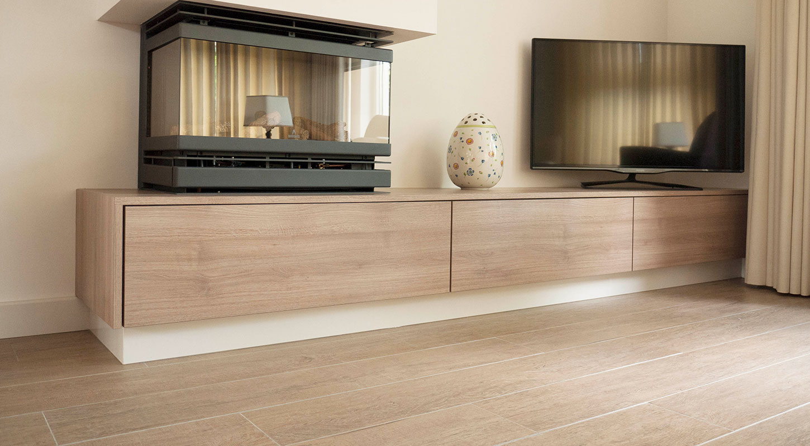
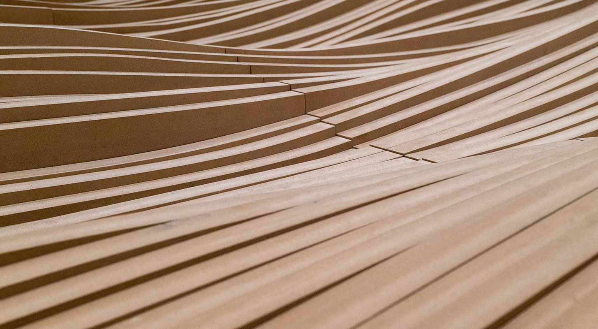

Maatwerk interieurbouw
Ontwerpen, bouwen, verbazen
Meubels, badmeubels, kasten en keukens op maat. Ontworpen en gemaakt in onze eigen werkplaats, voor uw woning of uw bedrijf.
Van A tot Z
Maatwerk interieurbouw uit eigen werkplaats
Voor maatwerk meubels, badmeubels, kasten, keukens en ander interieur van hoogwaardige houtsoorten kunt u bij ons terecht. Wij ontwerpen en maken al onze projecten in onze eigen werkplaats, waar wij alles hebben voor houtbewerking.
Maatwerk betekent dat uw meubel precies past: in de ruimte, bij uw stijl en bij hoe u het gebruikt. Hout combineren wij ook met rvs en glas.
- Ontwerp en uitvoering in onze eigen werkplaats
- Hoogwaardige houtsoorten, ook met rvs en glas
- Van modern, strak en stoer tot landelijk
- Voor particulieren en bedrijven
Op deze pagina
Wat wij op maat maken
-
Keukens
Van strak en modern tot landelijk, met advies over werkbladen en apparatuur.
Naar keukens -
Kasten en meubels
Inbouwkasten, tv-meubels, boekenkasten en tafels die precies passen.
Naar kasten -
Badmeubels
Zwevend, met dubbele wastafel of met een hoge kast ernaast.
Naar badmeubels -
Zakelijk
Horeca, winkel en kantoor, en ook de inrichting van uw bedrijfsbus.
Naar zakelijk
Keukens
Een keuken die bij u past
Modern, strak en stoer of juist landelijk. Uw keuken wordt gemaakt op de maat van uw ruimte.
Wij adviseren u bij de keuze van werkbladen en apparatuur. Met de stijl van de kranen, de spoelbak en de handgrepen versterkt u het karakter van de keuken.
- Kookeilanden, kastenwanden en inbouwkolommen
- Advies over werkbladen en apparatuur
- Ook bijkeukens en buitenkeukens
Kasten en meubels
Elke centimeter benut
Kasten en meubels die precies in de ruimte passen, ook onder een schuin dak of in een nis.
Een kast op maat sluit aan op muren, balken en schuine wanden. Zo gebruikt u ruimte waar een kast uit de winkel niet past. Een meubel op maat krijgt de vorm, de maat en de houtsoort die bij uw interieur horen.
- Inbouwkasten, inloopkasten en zolderkasten
- Tv-meubels, mediawanden en boekenkasten
- Tafels, banken en garderobes
Badkamer
Badmeubels op maat
Een badmeubel dat past bij de ruimte en bij de sfeer van uw badkamer.
Kies bijvoorbeeld een zwevend meubel, een dubbele wastafel of een hoge kast met open vakken. Net als bij de keuken versterkt u de stijl met de keuze van kranen, wasbakken en handgrepen.
- Zwevende badmeubels
- Enkele of dubbele wastafel
- Hout gecombineerd met steen
Zakelijk
Horeca, winkel en kantoor
Ook voor uw bedrijf maken wij het interieur op maat, in goed overleg.
Wij realiseren het interieur voor horeca, winkels en kantoren. Samen bekijken wij wat u wilt en wat past bij uw bedrijf. Ook het inrichten van een bedrijfsbus is bij ons mogelijk.
- Receptiebalies en toonbanken
- Kantoorkasten en werkplekken
- Horeca-interieur, zoals een bar
- Inrichting van bedrijfsbussen en mobiele keukens
Werkwijze
Zo komt uw interieur tot stand
In goed overleg, van het eerste gesprek tot het plaatsen.
Kennismaking en advies
U vertelt wat u wilt en hoe u de ruimte gebruikt. Wij denken mee over stijl, houtsoort, indeling en combinaties met rvs of glas.
Ontwerp en offerte
Wij werken uw wensen uit in een ontwerp, met de maten, de indeling en de afwerking. Daarna ontvangt u een vrijblijvende offerte.
Maken in eigen werkplaats
Uw meubel of interieur wordt op maat gemaakt in onze eigen werkplaats.
Plaatsen en afwerken
Wij plaatsen het werk en werken het netjes af. Afspraak is afspraak.
Veelgestelde vragen
Goed om te weten
Welke stijlen kunt u maken?
Net als bij onze trappen variëren de stijlen van modern, strak en stoer tot landelijk. Met de keuze van kranen, wasbakken en handgrepen kunt u de stijl nog versterken.
Kunt u hout combineren met andere materialen?
Ja. Wij werken met hoogwaardige houtsoorten en combineren die ook met rvs en glas.
Helpt u bij de keuze van werkbladen en apparatuur?
Ja, bij een keuken adviseren wij u ook over de keuze van werkbladen en apparatuur.
Werkt u ook voor bedrijven?
Ja. Wij maken ook interieurs voor horeca, winkels en kantoren, en wij kunnen uw bedrijfsbus inrichten. In goed overleg bekijken wij wat u wilt.
In welk gebied werkt u?
Ons werkgebied is voornamelijk Zuidoost Nederland, binnen een straal van 30 km vanuit Weert.

Een interieur op maat?
Vertel ons wat u wilt maken, voor thuis of voor uw bedrijf. Wij nemen contact met u op voor een gesprek en een vrijblijvende offerte.